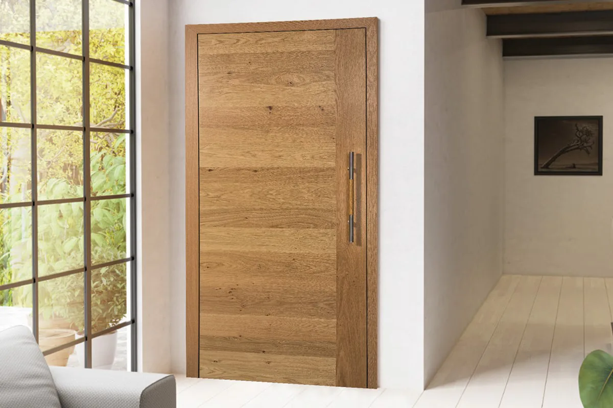
Drzwi wewnętrzne i zewnętrzne w Częstochowie
Salon DAN-POL: austriackie drzwi DANA robione na zamówienie, drzwi zewnętrzne Wikęd i drzwi loftowe. Przyjdź zobaczyć je na żywo, doradzimy wybór i zamontujemy.
Jakich drzwi szukasz?
Wszystkie drzwi DANA powstają na indywidualne zamówienie w fabryce w Austrii. W salonie zobaczysz je w różnych wykończeniach: lakierowane, fornirowane, laminowane i szklane.
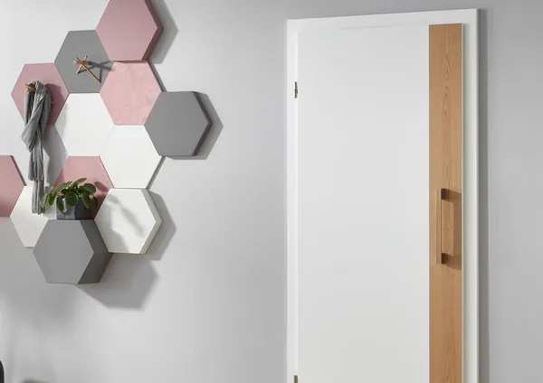
Nowoczesne
Frezy, wstawki drewna i metalu, intarsje z forniru.
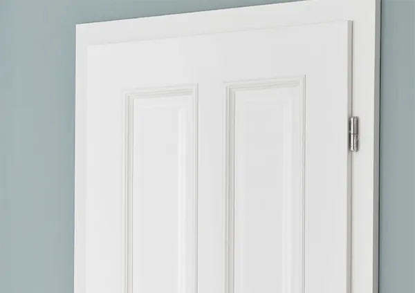
Klasyczne
Kasetony i ponadczasowe proporcje do każdego wnętrza.
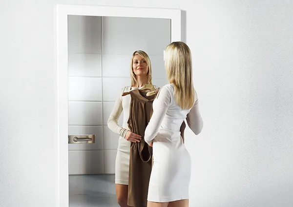
Szklane
Bezpieczne szkło, wzory matowane i przejrzyste.
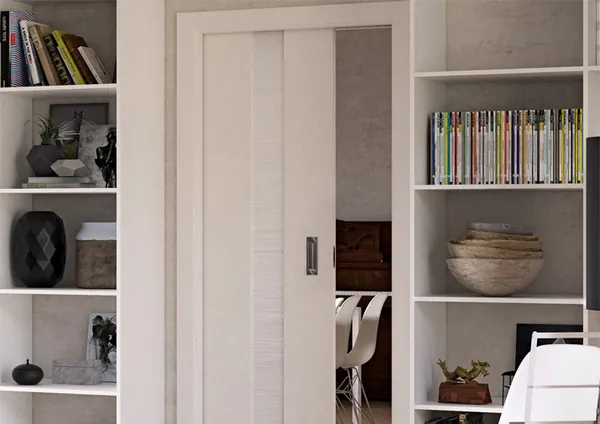
Przesuwne
Każde drzwi DANA, drewniane i szklane, także jako przesuwne.
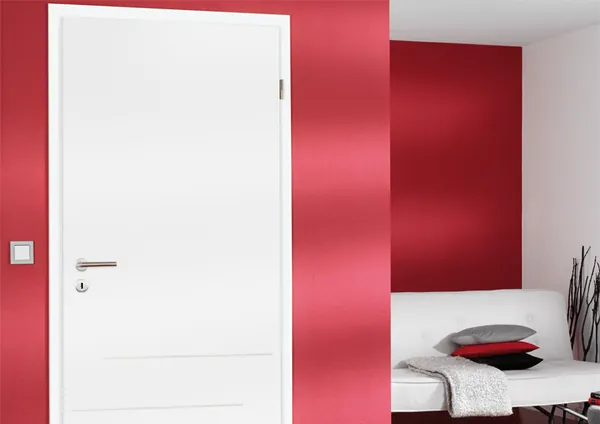
Hobby i Sax
Laminowane, białe, w przystępnej cenie, austriacka jakość.
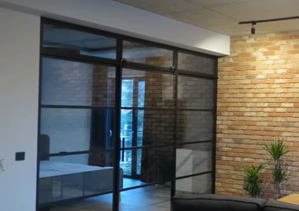
Loftowe
Czarne profile i szkło, drzwi i ścianki działowe.
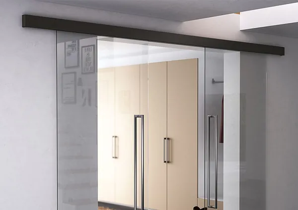
Loftowe przesuwne
Industrialny charakter i oszczędność miejsca.
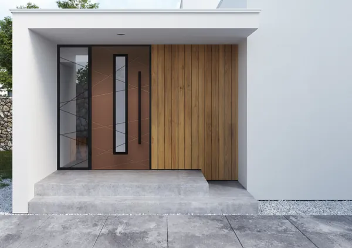
Zewnętrzne
Drzwi wejściowe Wikęd: stalowe, drewniane, aluminiowe.
Kolekcja drzwi nowoczesnych DANA
Drzwi z kolekcji nowoczesnej mają w standardzie podwyższoną izolacyjność akustyczną Rw = 32 dB.
Drzwi loftowe i industrialne
Cienkie czarne profile Loft Lite i Icon Loft, wypełnione szkłem albo stalą. Robimy z nich drzwi uchylne, przesuwne i ścianki działowe, a podziały szyb można ułożyć dowolnie.
- Szkło przezroczyste, matowe, ryflowane, grafitowe, brązowe, czarne albo lustro
- Profile Icon Loft projektowane i produkowane w Polsce
- Kilka konfiguracji drzwi loftowych, także przesuwnych, zobaczysz w salonie
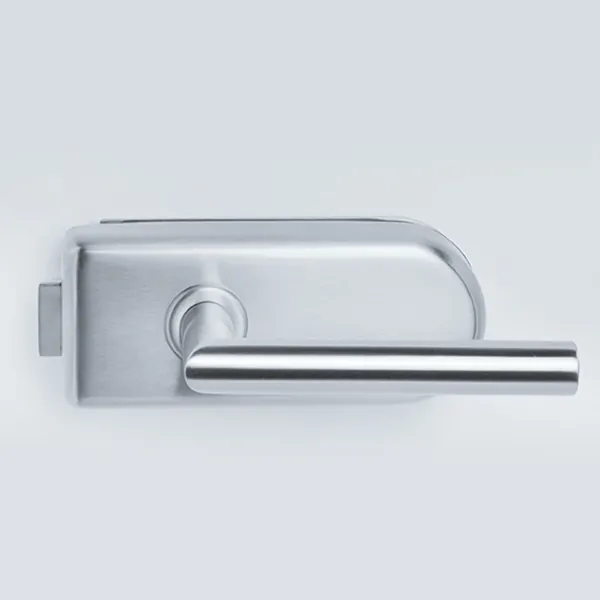
Szczegół jest ważny
Do drzwi dobieramy klamki, zawiasy i uchwyty: klamki do drzwi szklanych, płaskie Flatfix, długie pochwyty. Pełną ofertę znajdziesz w katalogach.
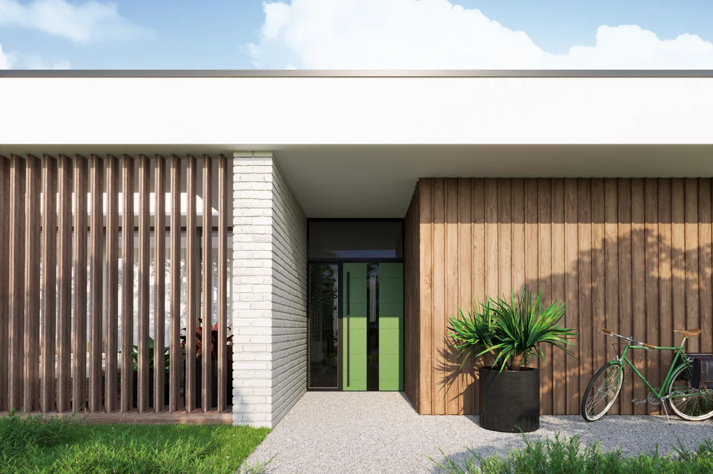
Drzwi zewnętrzne Wikęd
Drzwi wejściowe od wiodącego polskiego producenta: stalowe, drewniane i aluminiowe, tradycyjne i nowoczesne, także na wymiar. Różne klasy izolacji cieplnej i akustycznej, z montażem.
Zapytaj o drzwi wejścioweFirma rodzinna, która od 1998 roku sprowadza drzwi DANA
DAN-POL jest generalnym dystrybutorem w Polsce drzwi DANA, marki największego austriackiego producenta drzwi JELD-WEN Austria. Zaufali nam klienci indywidualni i instytucje.
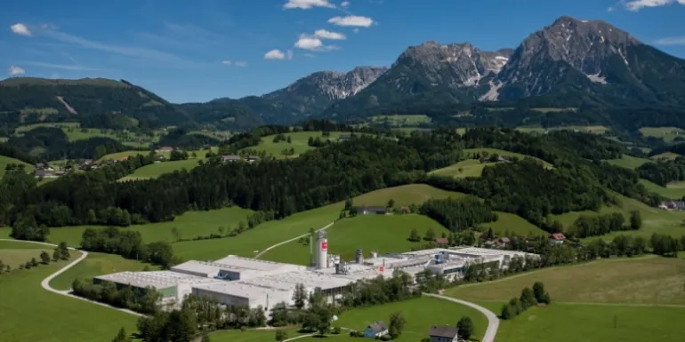
Drzwi do hoteli, szpitali i biur
Dla inwestycji dostarczamy drzwi techniczne DANA z atestami do budynków użyteczności publicznej. Szczegóły na drzwidana.pl.
Zdjęcia obiektów z drzwiami DANA z drzwidana.pl.
Zapraszamy do salonu
Salon i centrala DAN-POL
ul. Brzeźnicka 46a, 42-200 Częstochowa
34 325 22 52721 825 050
Przedstawiciele handlowi
601 19 99 27